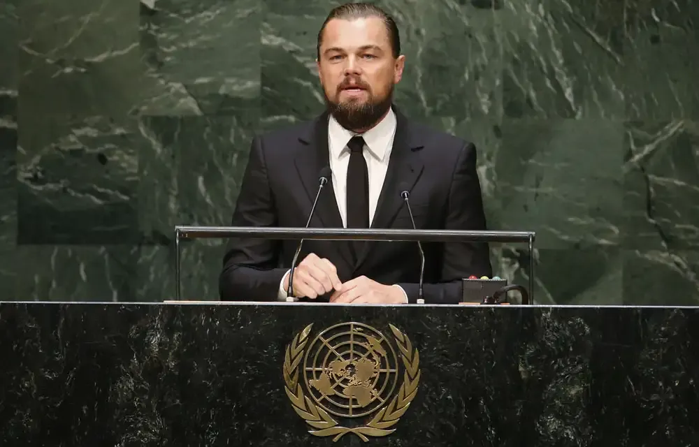
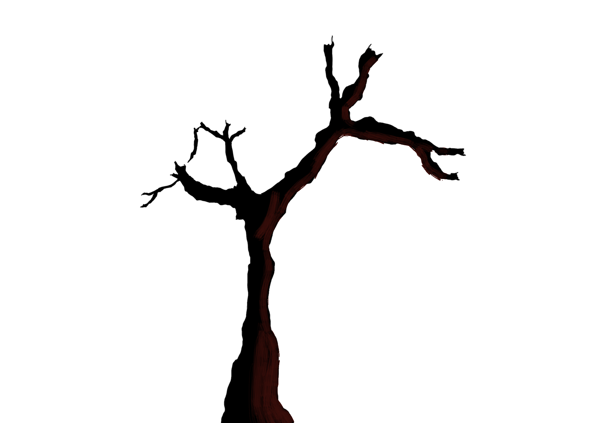

inferno
A generative artwork that aims to encourage its audience to be a part of
United Nations’ most important Sustainable Development Goal: SDG 13
SDG 13
Climate Action
SDG 13 aims to strengthen resilience and adaptive capacity to climate-related hazards and natural disasters in all countries
Incorporating climate strategies into national planning and boosting institutional and public education on mitigation and early warnings.
Mobilizing climate finance for developing nations via mechanisms like the Green Climate Fund, while empowering vulnerable regions, women, youth, and marginalized groups

“I believe humankind has looked at climate change in that same way: as if it were a fiction, happening to someone else’s planet.”
- Leonardo DiCaprio (2014)-
Most of us have heard about climate change, but knowing it exists is different from understanding how it connects to our lives. As Leonardo DiCaprio said, I believe humankind has looked at climate change in that same way: as if it were a fiction, happening to someone else’s planet His words challenge the distance we often put between ourselves and the crisis. SDG 13 calls for action on climate change, and understanding its local impacts can help us see where to begin.
Look beyond the headlines: discover how climate change is affecting your community today. The future is one day away, so your action starts on day one.
The Reality
NASA's Terra and Aqua satellites detect active wildfires twice each day. Scientists studied this data over a 21-year span and found that extreme wildfires have become more frequent, more intense, and larger. The largest increase in extreme fire behavior was in the temperate conifer forests of the Western U.S. and the boreal forests of northern North America and Russia. Warmer nighttime temperatures are a major contributing factor, allowing fire activity to persist overnight.
(NASA Science, n.d.)

Climate change & Global warming raises
the chance of wildfire
inferno
A generative artwork illustrating a lifeless forest swallowed by an exaggerated wildfire. This illustration aims to give its audience a reality check of what can or is happening to their world, showing them a terrible but possible vision which they can prevent if they are willing to take action.
View artworkThăng Long bấm Sài Gòn Bạc
Nguyễn Nghĩa Dũng
S4113869
Nguyễn Phương Linh
s4135042
Đỗ Minh Anh
s4128616
Phạm Nam Phương
s4138481